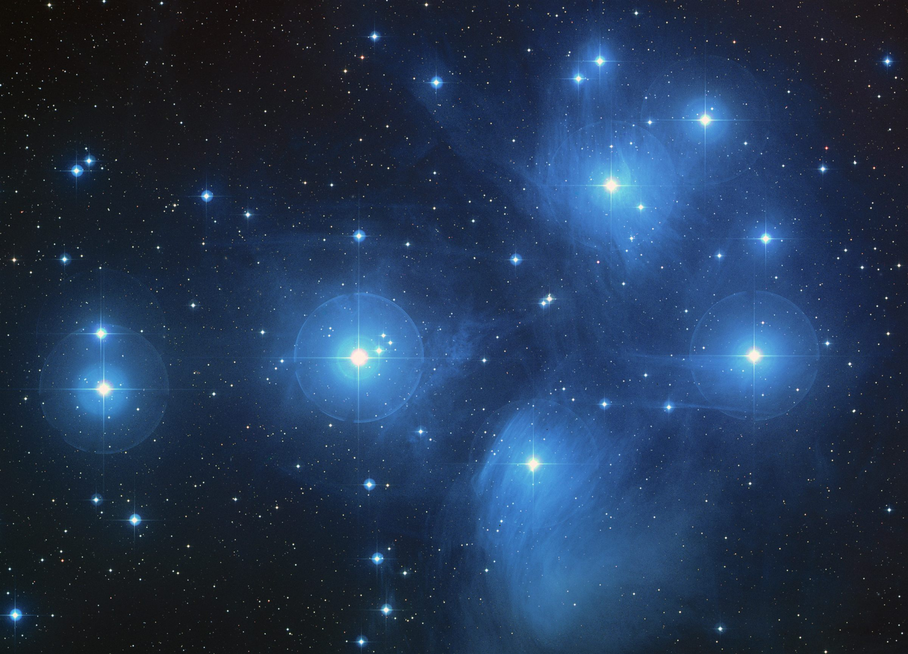

Third Street Elementary
An outreach initiative for forming informal FLL teams with Third Street Elementary. Participants will prepare to take part in the February friendly.

Seven initiatives · One February friendly
Forming 10 to 12 informal FLL teams for our February FLL friendly.
The program
We aim to form 10 to 12 informal FIRST LEGO League (FLL) teams across these seven outreach initiatives.
The teams will come together for a February FLL friendly. Participation and meeting details will be added here as they are confirmed.
The initiatives
Explore the initiatives below. Contact and sign-up details are awaiting confirmation.
An outreach initiative for forming informal FLL teams with Third Street Elementary. Participants will prepare to take part in the February friendly.
An outreach initiative for forming informal FLL teams with National Society of Black Engineers Jr. Participants will prepare to take part in the February friendly.
An outreach initiative for forming informal FLL teams with Escuela Plus Elementary. Participants will prepare to take part in the February friendly.
An outreach initiative for forming informal FLL teams under the working name SISTERS. Participants will prepare to take part in the February friendly.
SISTERS is a working name and may change.
An outreach initiative for forming informal FLL teams with Mar Vista Family Center. Participants will prepare to take part in the February friendly.
An outreach initiative for forming informal FLL teams with LEGO Robot World. Participants will prepare to take part in the February friendly.
An outreach initiative for forming informal FLL teams with Center for Early Education. Participants will prepare to take part in the February friendly.